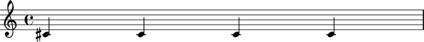
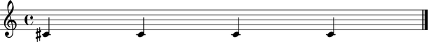
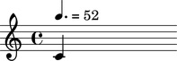
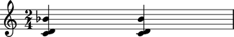
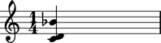
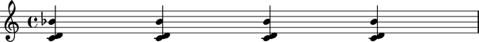

The Abjad _Component class
The Abjad _Component class models the functionality that all leaves and containers share.
Public interface
Attributes
The Abjad _Component class is an abstract class not meant to be instantiated by hand.
But we show examples of _Component attributes here using notes and staves as concrete examples of the _Component class.
Read / write attribute defined here.
Returns LilyPond accidentals style string.
Accepts LilyPond accidentals style string, None.
abjad> staff = Staff(Note(1, (1, 4)) * 4)
abjad> staff.accidentals = 'forget'
Read / write attribute defined here.
Returns LilyPond barline string.
Accepts LilyPond barline string, None.
abjad> staff = Staff(Note(1, (1, 4)) * 4)
abjad> staff.barline = '|.'
abjad> staff = Staff(Note(1, (1, 4)) * 4)
abjad> staff.comments.append("All notes here exhibit the same pitch.")
% All notes here exhibit the same pitch.
\new Staff {
cs'4
cs'4
cs'4
cs'4
}
abjad> staff = Staff(Note(0, (1, 4)) * 4)
abjad> staff.format
"\\new Staff {\n\tc'4\n\tc'4\n\tc'4\n\tc'4\n}"
abjad> note = Note(0, (1, 4))
abjad> note.tempo = ((3, 8), 52)
Methods
abjad> chord = Chord([0, 2, 10], (1, 4))
abjad> new = chord.copy( )
abjad> id(chord) != id(new) True
Bound method implemented here.
Return True if classname in class hierarchy of self, and False otherwise.
DEPRECATED. Use isinstance( ) instead.
abjad> chord = Chord([0, 2, 10], (1, 4))
abjad> chord.kind('Chord')
True
Overloads
Special method implemented here.
Implements left-handed multiplication against self.
Returns a Python list of n copies of self.
abjad> chord = Chord([0, 2, 10], (1, 4))
abjad> chords = chord * 4
Special method implemented here.
Implements right-handed multiplication against self.
Returns a Python list of n copies of self.
abjad> chord = Chord([0, 2, 10], (1, 4))
abjad> chords = 4 * chord

See the
_Componentclass incore/component.pyfor implementation details.